Film | 32min | Screening | DCP | Color | 2019
Synopsis
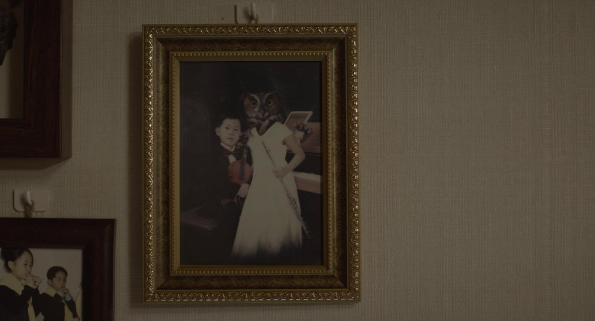
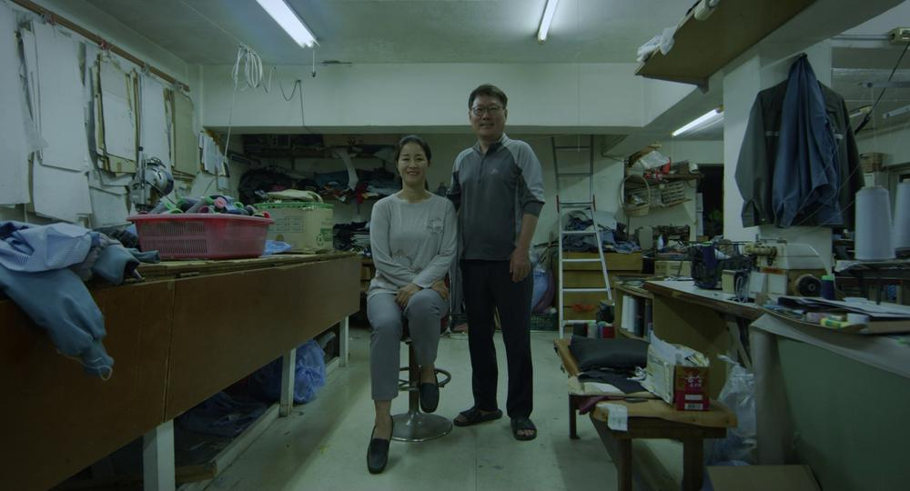
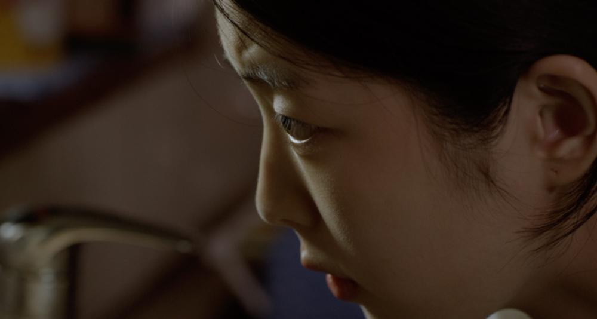
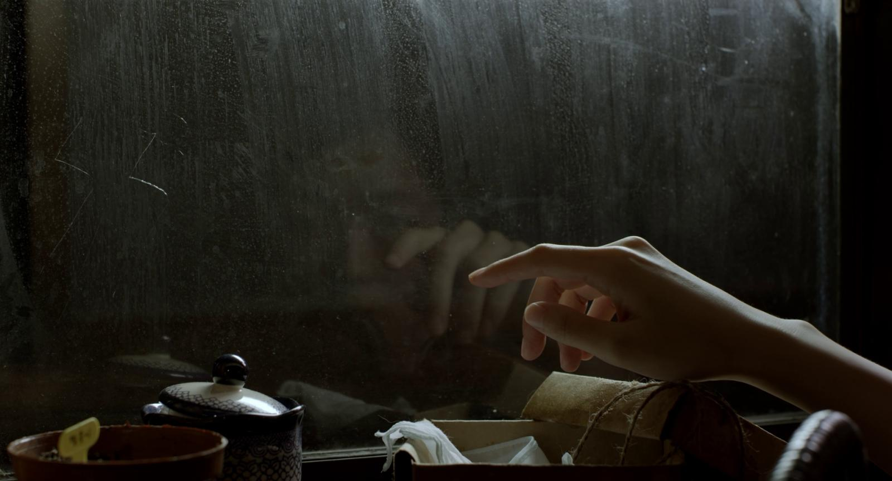
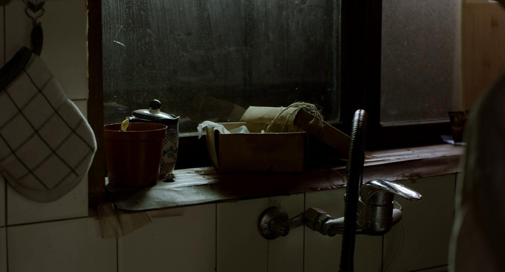
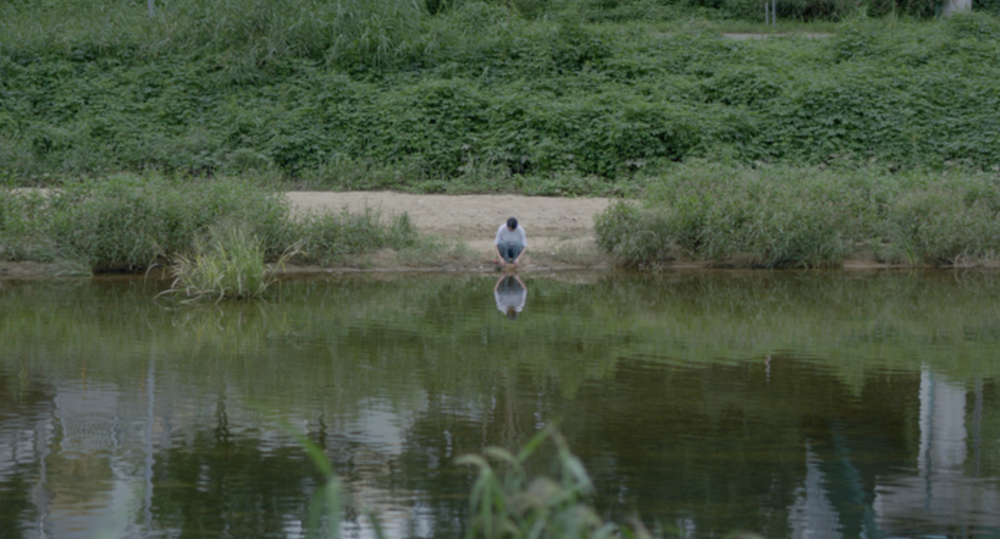
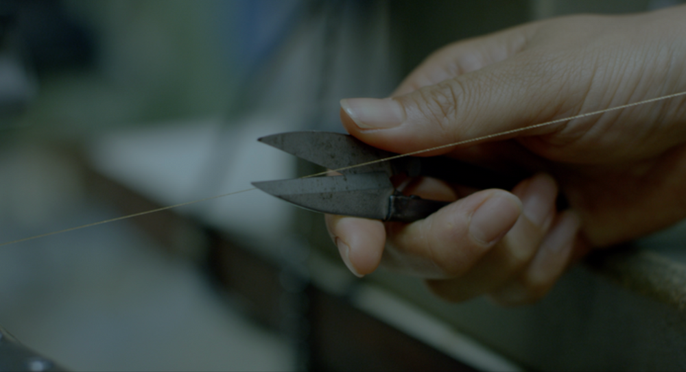
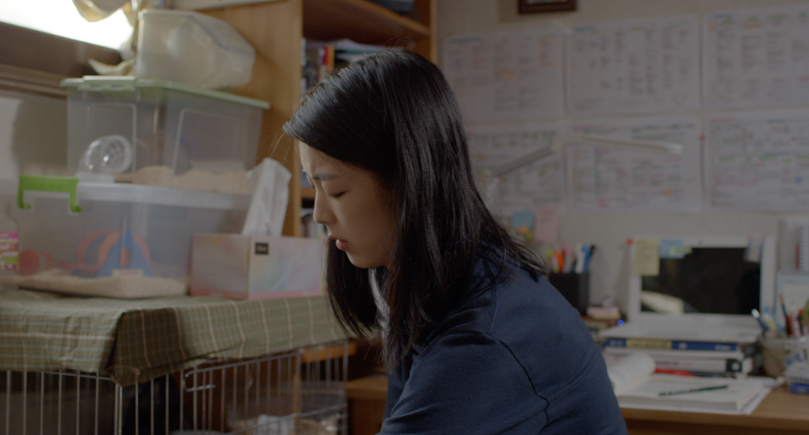
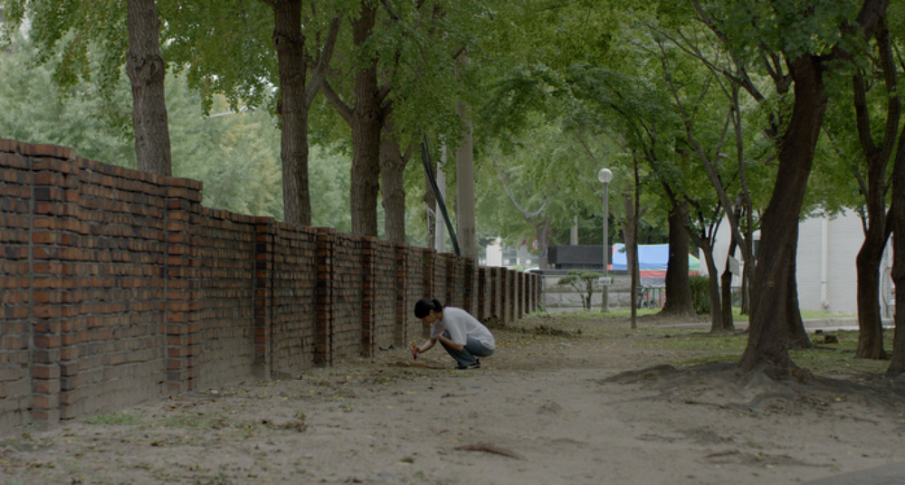
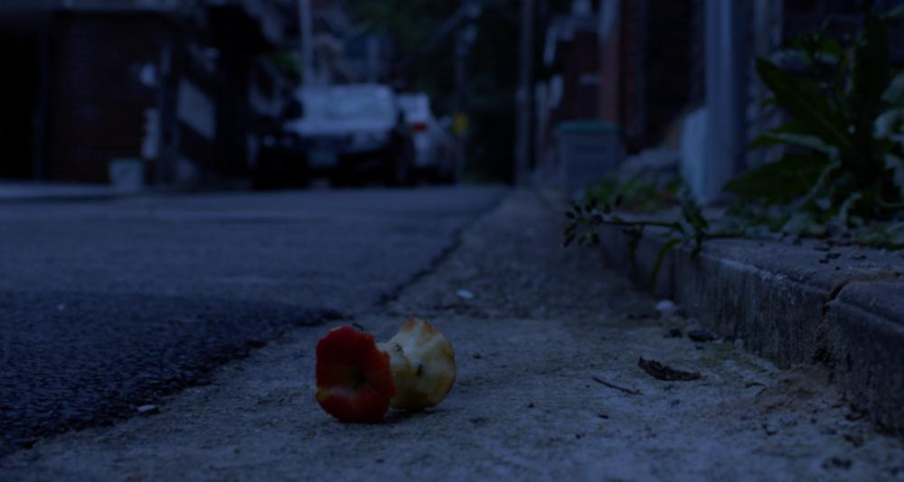
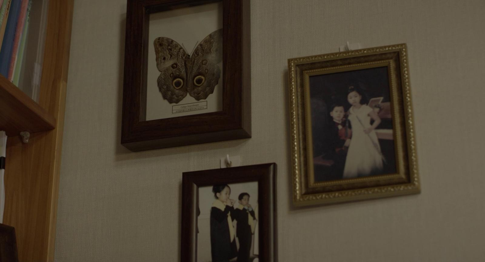
Director’s Note : Fig
하지만 이런 소비의 흐름 속에서도 우리가 궁극적으로 포기하지 못할 한 가지는 집이다. 사람이 살아가기 위해 필요한 3요소 의·식·주 중 사람의 안정을 위해 가장 중요한 것은 주, 즉 삶의 공간이기 때문이다. 누구든 오롯이 자신으로 존재할 수 있는 자신의 집이 필요하다.
여러 번 이사를 하며 마주한 집값과 그 형태는 지역마다 천차만별이었다. 집 앞 아파트 상가 1층에 가득 들어찬 부동산, 그리고 그 전단지의 숫자들을 보고 있으면 집이라는게 그냥 머리 대고 누워서 잘 수 있으면 되는 것 아닌가 싶다가도 이 허공에 떠있는 조그만 몇 평방미터의 땅이 왜 욕망의 정점이 되는지 이해가 되기도 했다.
이번 작업의 시각적 키워드는 '작고 까만 원'이다. 부루마블 게임머니처럼 현실감 없는 서울의 집값 '2,000,000,000' 속의 0들, 재능과 상관없이 대한민국의 초등학생들이라면 한번 쯤은 배웠던 악보 위의 음표들, 그리고 고등학생 시절 지겹게 채웠던 OMR 카드의 원들, 결국 이 동그라미들은 모두 '잘 살아보세'라는 열망이 남긴 흔적이 아닐까.
어느 날 집 앞을 지나다가, 부동산 전단지 속 그 까만 숫자들이 마치 머리, 가슴, 배가 나누어진 개미같이 보였다. 개미들은 열심히 일하는 소시민의 비유로도 자주 사용되지만, 그들은 대들보를 갉아먹어 집을 무너뜨리기도 한다. 평생을 성실하게 일했지만 거대한 부동산 시장 앞에 무력해진 부모님 세대, 그리고 내 집이라는 최소한의 안정마저 사치가 된 젊은 세대의 비극을 '숫자와 개미'라는 은유를 통해 조명해보았다.
Yet, even in this tide of shared consumption, there is one thing we ultimately cannot give up: the home. Among the three essentials of life—food, clothing, and shelter—it is ‘shelter,’ our living space, that is most vital for human stability. Everyone needs a home of their own, a place where they can exist entirely as themselves.
Having moved several times, I have witnessed how the price and form of a home vary wildly by location. Looking at the real estate offices packed into the first floor of apartment complexes and the numbers plastered on their flyers, I found myself torn. I wondered if a home shouldn't just be a place to lay one’s head, yet at the same time, I began to understand why these tiny few square meters suspended in mid-air become the pinnacle of human desire.
The visual keyword for this project is the ‘small black circle.’ The string of zeros in a house price like ‘2,000,000,000’—so surreal it feels like Monopoly money; the notes on sheet music that almost every Korean child has had to learn regardless of talent; the circles on OMR cards we tirelessly filled in during high school—in the end, aren’t all these circles traces of our collective yearning to ‘live a better life’?
Passing by a real estate office one day, the black numbers on those flyers looked like ants, divided into a head, thorax, and abdomen. While ants are often used as a metaphor for the hardworking common people, they also possess the power to gnaw away at a main beam and bring an entire house down. Through the metaphor of ‘numbers and ants,’ I sought to illuminate the tragedy of two generations: our parents’ generation, who worked fervently all their lives only to be left powerless before a gargantuan real estate market, and the youth of today, for whom even the basic stability of owning a home has become an utter luxury.
Directed by KIM hyunjin
Screenwriter / KIM hyunjin
Assistant director / GONG Seonjeong
Line PD / HAN Mijung, JO Eunji
Director of Photograpy / CHO Minkook
Camera Department / YOO Chung, KIM Dohyeong, HWANG Hyunjin,
KIM Hanbin, Park Hyeongjun, LEE Sooyeon, LEE Suho
Production Department / OH Yukyung, JUNG Dahye, KIM Dohyeong
Art Department / LEE Jisun, KIM Hyunjin
Editing, D.I / KIM hyunjin
Graphic Design / KIM Dohee, JO Eunji
Boom Operator / BAE Haeun, KIM joonhyeok, KIM chanyang
Sound Mixing / KIM Chanyang
2D VFX / LEE Sooyeon
3D VFX Animating / YOON Yeojin
3D VFX Rendering / LEE Bomin
3D VFX Manipulation / KIM hyunjin
Title Design / KIM Dohee
Poster Design / KIM Yeji
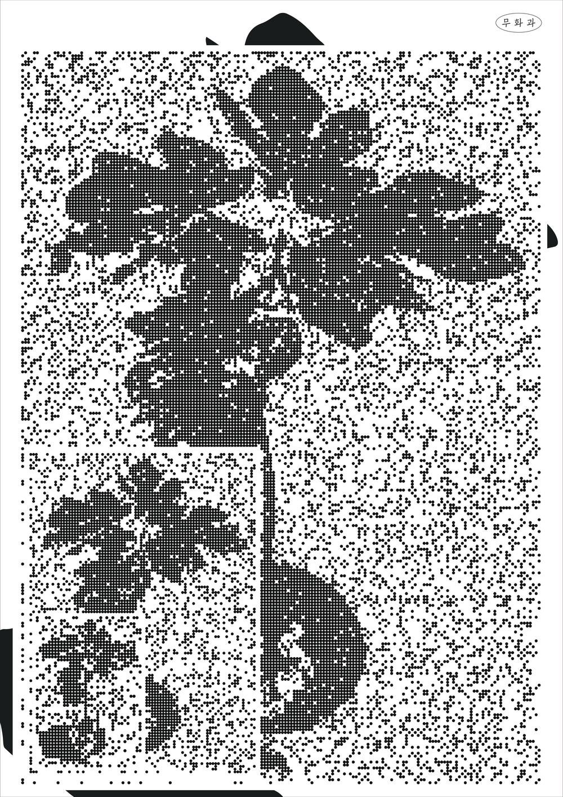